Telemetry
Fine-wire electrodes record bilateral axial and fin muscle activity using a custom 16-channel archival unit.
Advanced Intelligent Systems · 2026
Pose Reconstruction and Flow Sensing
A unified bio-signal telemetry framework that decodes fish body pose and hydrodynamic context from multichannel intramuscular EMG.
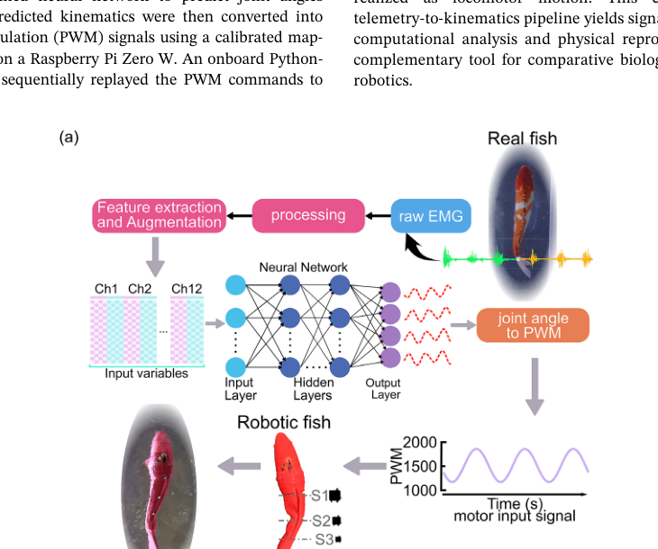
Bio-signal telemetry and modeling framework
The system records synchronized EMG and video, extracts robust time, frequency, and time-frequency features, augments them with local RMS subsequences, and trains neural models for both regression and classification.
Fine-wire electrodes record bilateral axial and fin muscle activity using a custom 16-channel archival unit.
Top-view video and EMG are aligned with an LED marker, then fish midlines are extracted with DeepLabCut.
A feature-augmented EMG matrix feeds a deep neural network to predict four body joint angles.
The same EMG pipeline classifies flow speeds and hydrodynamic regimes from muscle activity.
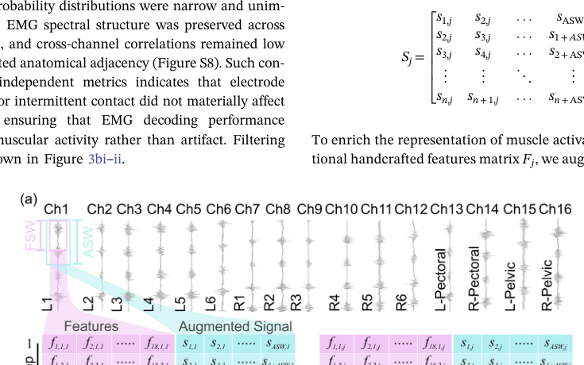
Input-output generation: channel features are stacked and mapped to joint angles.
Hardware and experiments
The study spans free swimming, laminar flow, Karman vortex streets, and reverse Karman vortex streets. This makes the model learn from both naturalistic motion and controlled hydrodynamic perturbations.
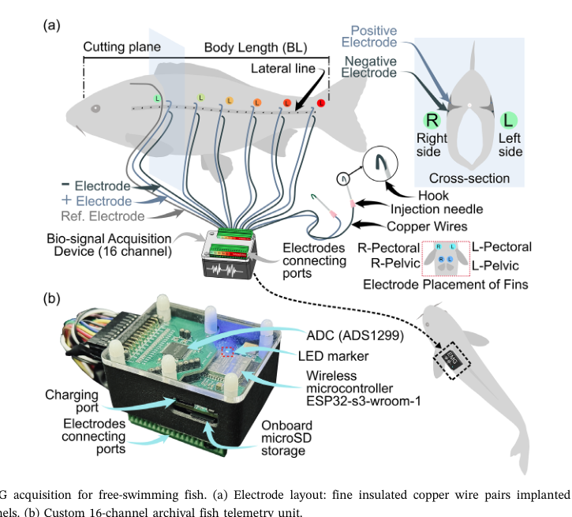
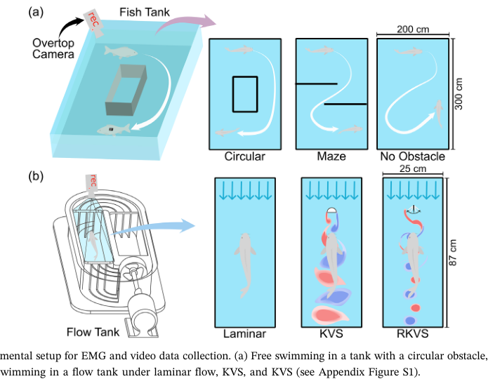
Pose reconstruction
A deep neural network predicts four head-fixed joint angles from 12 axial EMG channels. Forward kinematics then reconstructs the fish midline, enabling downstream estimates of tail displacement, lateral velocity, and energetic output.
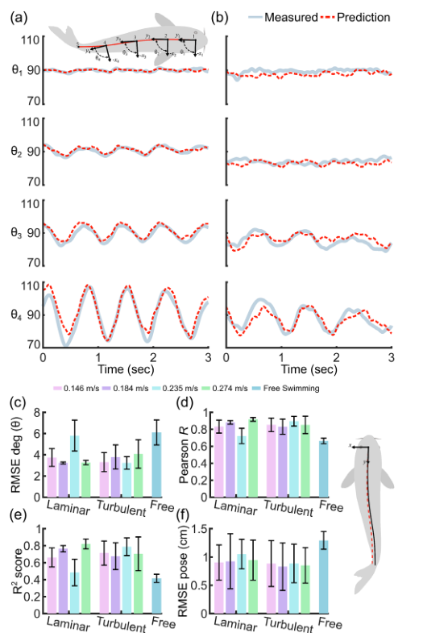
Predicted joint angles closely follow measured kinematics across laminar, turbulent, and free-swimming conditions.
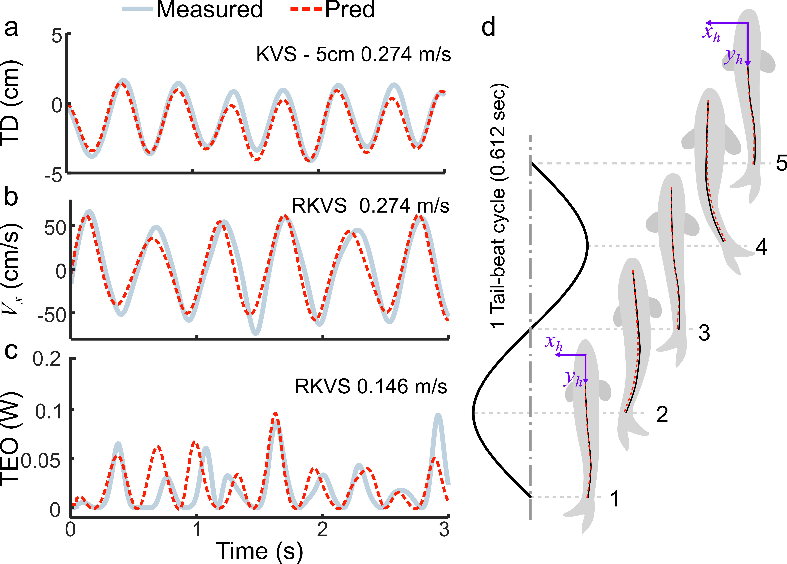
EMG-derived pose supports higher-order swimming metrics such as tail displacement, tail velocity, and total energy output.
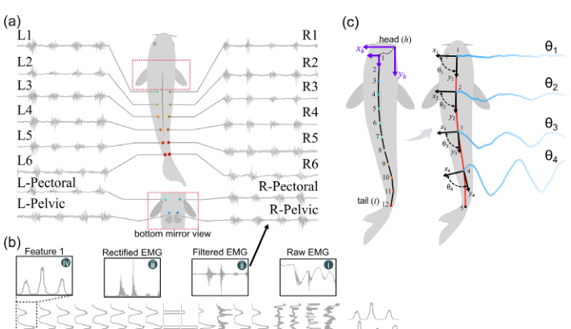
Raw EMG is filtered, rectified, summarized, and aligned with head-fixed pose variables.
Hydrodynamic condition inference
Replacing the regression head with a softmax classifier turns the pose-decoding pipeline into a flow sensor. Mid-body axial electrodes provide most of the useful information, offering a practical path toward lower-channel telemetry.
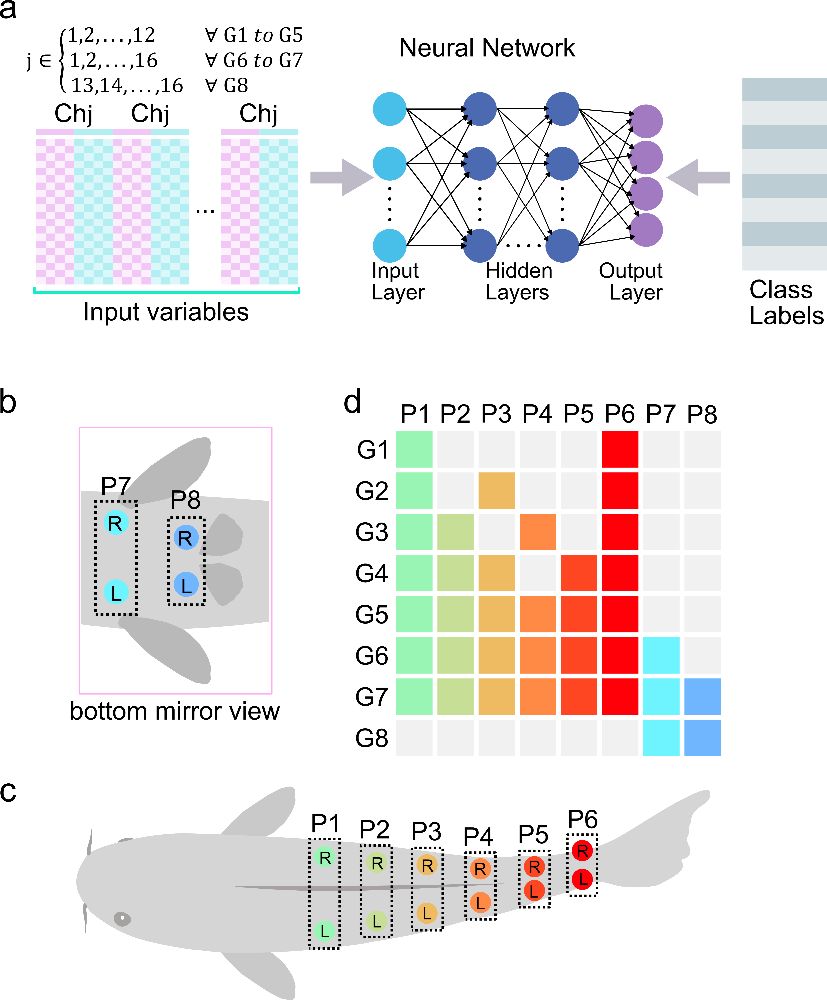
Channel-group ablations compare axial and fin muscle information.
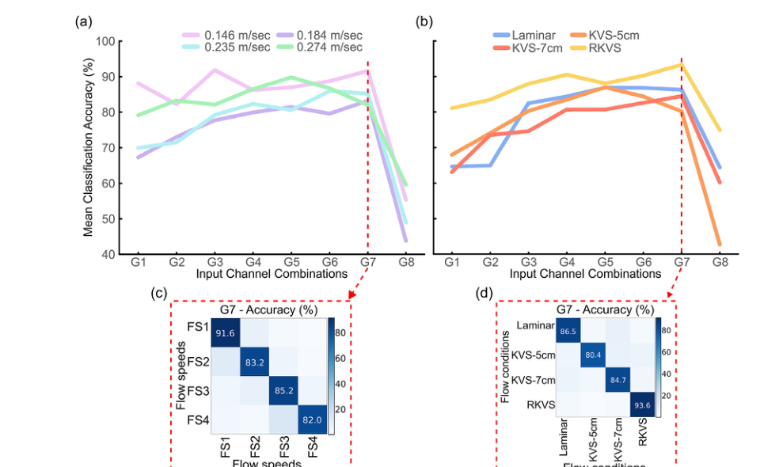
Flow speed and regime confusion matrices show strong diagonal dominance.
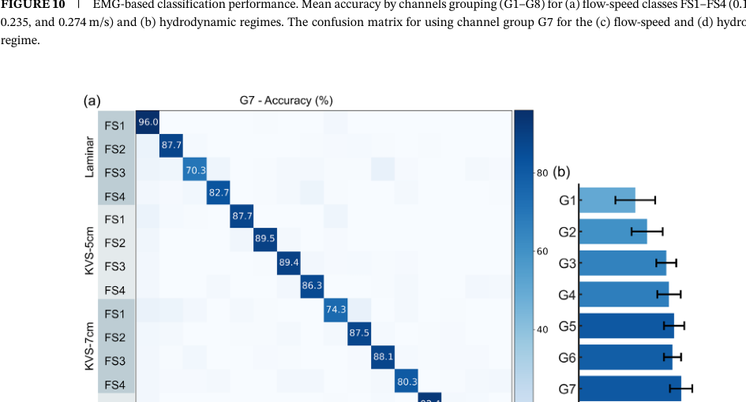
A generalized classifier jointly decodes environment and speed.
Cross-domain validation
The decoded pose is not only a numerical output: it generates hydrodynamic flow fields in simulation and actionable PWM commands for a soft-bodied robotic fish.
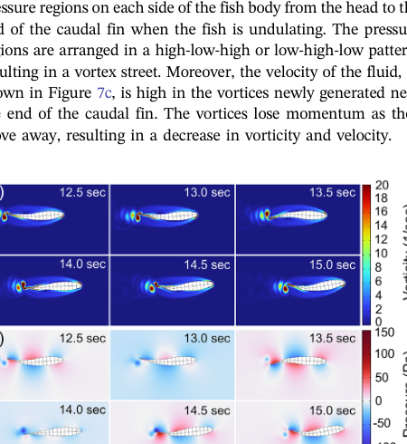
Highlights
mean RMSE for joint-angle prediction.
midline RMSE as a fraction of mean body length.
mid-body axial channels retain most flow information.
best reported accuracy using the full channel group.
Chart values are taken from the generalized classifier channel-group accuracies reported in the paper.
Citation
@article{afridi2026emgfish,
title = {EMG-Driven Telemetry and Inference System for Fish: Pose Reconstruction and Flow Sensing},
author = {Afridi, Rahdar Hussain and Afridi, Waqar Hussain and Hamza, Muhammad and Tanveer, Ahsan and Wu, Mingxin and Zheng, Xingwen and Li, Liang and Xie, Guangming},
journal = {Advanced Intelligent Systems},
year = {2026},
doi = {10.1002/aisy.202501085}
}